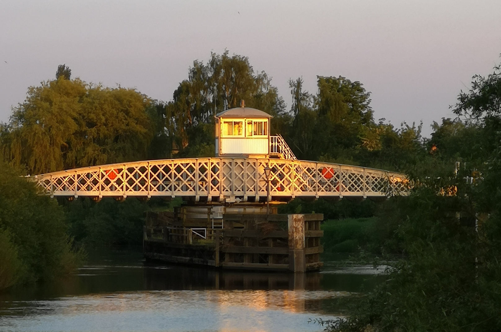
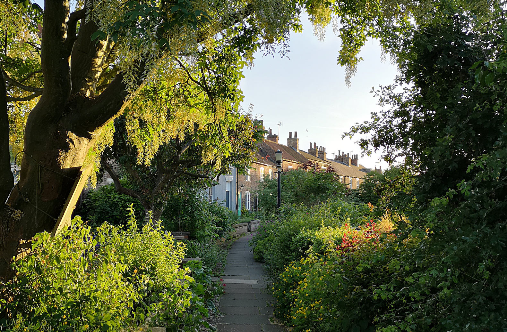
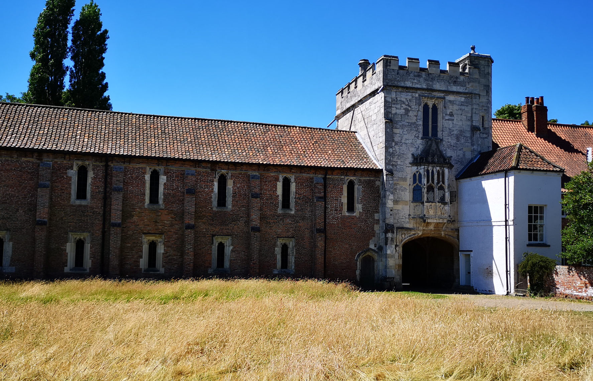

<!-- Main -->
<div id="main" class="wrapper orangepurple">
  <div class="container">
    <section>
      <header class="major">
        <h2>{{ page.title }}</h2>
        <!-- <span class="byline">Integer sit amet pede vel arcu aliquet pretium</span> -->
      </header>
      <p>Cawoodstock is a new free music, arts and cultural weekend based around Cawood, near Selby, in beautiful North Yorkshire.</p>

      

      <p>All forms of music, cultural activities and performing arts are encouraged - whether it be a rock band or a poetry reading. Dance, film, literature, singing, storytelling... anything that comes under the heading of music, culture, or performing arts is fair game! We're particularly keen to encourage activities that engage young people in the Arts and facilitate their development as musicians and performers.</p>

      

      <p>Cawoodstock is organised and run by the people of Cawood for the people of our village and the surrounding area. We are unfunded and everyone is a volunteer. It's important that the festival has a home-grown, grass-roots feel, and that the people of Cawood have the freedom to make the festival whatever they want it to be.</p>

      

      <p>Participating venues organise their own musical acts, cultural events, and other activities, directly with the artists. The small Cawoodstock team co-ordinates these into a listing here on the website.</p>

    </section>
  </div>
</div>
